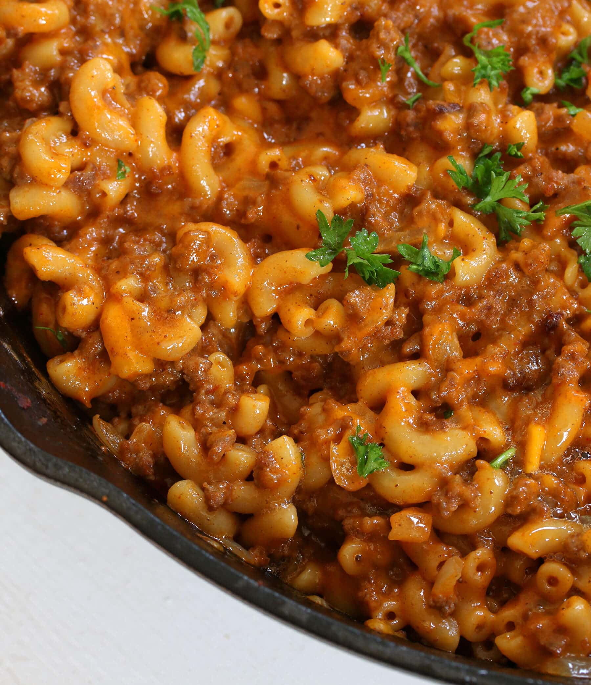

The dirtiest, yummiest hamburger mac & cheese you've ever had
If you have ever craved for meat, cheese, and macaroni noodles
with the addition of some fresh cut veggies, look no further! If you're worried about
the healthiness of this dish let me put your anxiety to rest: we threw in some veggies that
transforms this dish from artery-clogging to fresh and crispy goodness.
Ingredients (main)
- 500g hamburger meat
- 4tbsp taco seasoning
- 4 petite diced tomatoes
- 3 diced green peppers
- 2 cups beef broth
- 1 cup elbow macaroni or pasta noodles
Ingredients (cheese topping)
- 2 tbsp butter
- 2 tbsp flour
- 3/4 cup milk
- 1 cup shredded cheddar cheese
- 1/2 tsp salt
- 1/2 tsp pepper
Instructions
- Put the meat in a large skillet and lightly brown
- Add taco seasoning, tomatoes, green peppers, beef broth, and macaroni
- Bring to a boil then lower heat and simmer for 10~15 min until macaroni is soft
- While simmering, prepare a separate small pot and melt butter
- add flour to the butter and mix frequently for about 5 min until the mixture becomes a light brown
- add milk and bring to boil while mixing frequently until mixture becomes thick
- remove from heat, add cheese and mix until smooth, add salt & pepper
- Pour the cheese mixture on top of the hamburger mixture before serving.